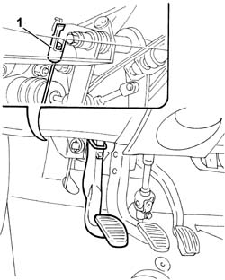
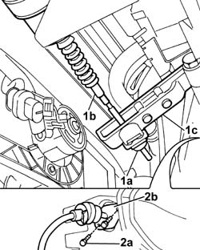

1820A20 release cable - r + r
- Path
- Procedures > 18 CLUTCH UNIT > 1820 CLUTCH RELEASE CONTROLS > 1820A CLUTCH RELEASE MECHANICAL CONTROL > 1820A20 release cable - r + r
- Kind
- repair procedure (removal / refitting; the operation number is the code)
- Applies to
- all engines; all production periods
- Interactive page
- https://sloeber94.github.io/elrnDB-fPnd/en/#/2752653
Applies to: all engines; all production periods
 Removing
Removing
 Refitting
Refitting1. Working from inside the car, disconnect the clutch release cable from the pedal.

Applies to: all engines; all production periods
1. Undo the fixing nut (1a) and disconnect the clutch control cable (1b) from the thrust bearing control lever (1c).
Work via the wheel arch as follows:
2. Undo the bolts (2a) for the flange on the passenger compartment/engine compartment bulkhead, then remove the release cable (2b) from the engine compartment.

Applies to: all engines; all production periods
Refitting
RemovingFit the clutch release cable from the engine compartment to the passenger compartment through the slot in the bulkhead.
Working from inside the vehicle, connect the cable to the clutch pedal.
Working via the wheel arch, fit the cable ton the thrust bearing control lever and on the retainer on the gearbox.
Working via the wheel arch, tighten the bolts fixing the cable flange to the bulkhead.